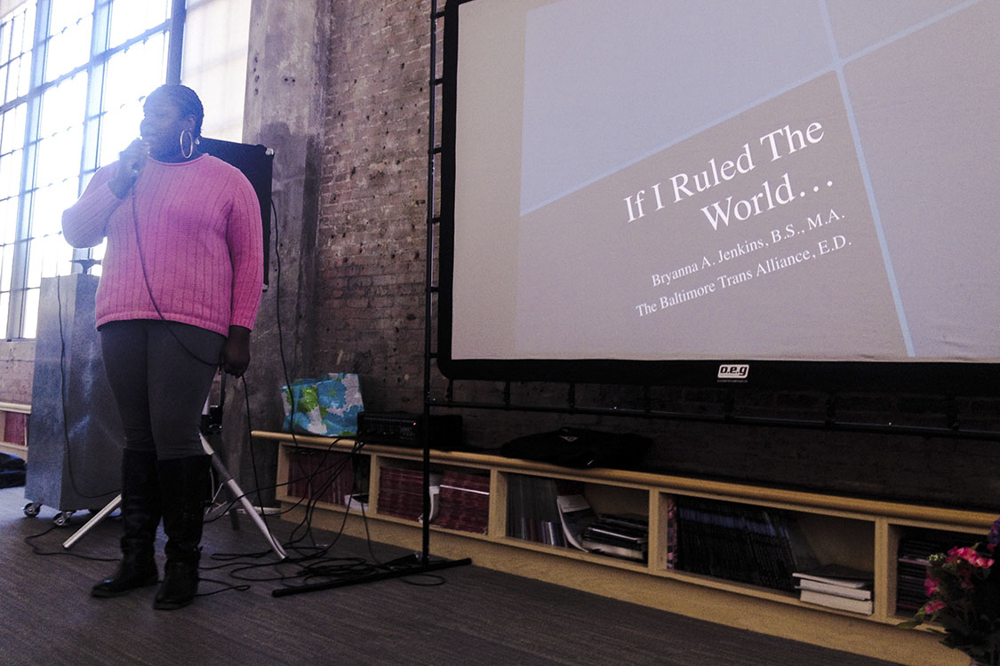

IF I RULED THE WORLD CONFERENCE
Press Press collab w/ Jared Brown + Valentina Cabezas + Bomin Jeon + Gaia
The IF I RULED THE WORLD CONFERENCE took place at Open Space’s 7th annual Publications and Multiples Fair at the Baltimore Design School (1500 Barclay) in Baltimore, Maryland. The fair went from 12-6PM on Saturday, April 9th and Sunday, April 10th.
Conference Schedule
Saturday, April 9th, 4:00-6:00pm
4:00 - 4:30 - Dance party DJ'ed by Greydolf & Introduction by Kimi Hanauer
4:30 - 4:50 - Poetry Reading and Human Rights Manifesto Declaration by Baltimore City Community College Refugee Youth Project students: Mang Thang, Cing Kim, Nuam Lun and others
5:00 - 6:00 - If I Ruled the World Contributors panel featuring: Person Albach, Khadija Nia Adell, Jared Brown, Besan Khamis, Rahul Shinde, Greydolf and Amy Reid
Sunday, April 10th, 2:00-4:00pm
2:00 - 2:30 - Get Your Life Productions! Film Screening and Q & A with the artists
2:30 - 2:45 - Dance Pary DJ'ed by Amy Reid & Greydolf
3:00 - 4:00 - Bryanna Jankins Keynote
For more info check our Facebook Event or the Press Press website
Poetry Reading and Human Rights Manifesto Declaration by Baltimore City Community College Refugee Youth Project students: Mang Thang, Cing Kim, Nuam Lun and others


If I Ruled the World Contributors panel featuring: Person Albach, Khadija Nia Adell, Jared Brown, Besan Khamis, Rahul Shinde, Greydolf and Amy Reid


Get Your Life Productions! Film Screening and Q & A with the artists


Bryanna Jankins Keynote
